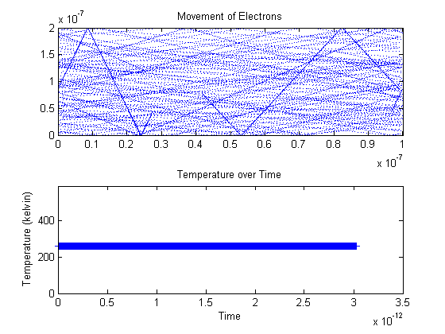

Assignment#1-Part 1:Electron Modelling
%Jason Gazo (100975245) Date: Feb/04/2018
%%Introduction
%The purpose of this part of the experiment is to observe the movement of %electrons moving inside an N-type Silicon semiconductor crystal. The %effective mass of the electrons is given by multiplying its rest mass %(9.109x10^-31kg)electron by a coefficient. Once the rest mass is found %(2.36634e-31)kg, the thermal velocity can be solved. The thermal %velocity will be solved for a temperature of 300 kelvin. This thermal velocity %is approximately 1.3 e+5 m/s. If we assume electrons collide every %0.2ps, the estimated mean free path for each electron is 2.3e-10 %meters. This script will simply showcase the movement of electrons in a %frame of 200nm x 100nm. The electrons will reflect off the top and bottom %edge of the frame with a reflection angle equal to its incident angle. %When an electron passes through either side edge (left or right) it will %be translated to the opposite edge and its velocity (trajectory included) %will be maintained. The more particles used in this Monte Carlo %simulation will increase the precision of the outputted arguments in the %future sections.
%%Code:
clc
%effective mass of electrons
%rest mass mo in kg
mo=9.109*10^-31;
m=0.26*mo;
%botlzman constant
kb=1.38064*10^-23;
%%Question 1 related: Solve for thermal velocity
vt=@(t) sqrt(kb*t/m);
vth=vt(300);
fprintf('The expected thermal velocity is %6.4f m/s \n',vt(300))
%%Question 2 related: Solve for the mean free path
fprintf('The expected mean time between collisions is 0.200e-12 seconds \n')
%mean time collisions is 0.2 ps
tmn=0.2*10^-12;
%mean free path
mnfreepath=tmn*vt(300);
fprintf('The expected mean free path is %6.4f e-08 meters\n',mnfreepath*10^8)
%Nominal size of region is 200nmx100nm
fprintf('-----------------------------------------------------------\n')
w=200*10^-9;
l=100*10^-9;
%Setting the time step:
deltaT=7.562*10^-15;
num=30;
%Randomize the initial location of the particles in the frame
vertarray=rand(num,1)*w;
horarray=rand(num,1)*l;
%Generate the array of velocities and random angles (0 -> 2*pi)
angles=rand(num)*2*pi;
vx=ones(num,1);
vy=ones(num,1);
vrms=ones(num,1);
%All particles will have the same velocity except with a random trajectory
for i=1:num
vx(i)=cos(angles(i))*vth;
vy(i)=sin(angles(i))*vth;
end
sumtemp=0;
%%Movie begins here for a total of 400 iterations
for i=1:400
%horizontal periodic boundary behaviour
horarray(horarray>=l)=horarray(horarray>=l) - l;
horarray(horarray<=0)=horarray(horarray<=0)+l;
%vertical reflection boundary behaviour
IT=(vertarray>=w);
vy(IT)=-vy(IT);
IT=(vertarray<=0);
vy(IT)=-vy(IT);
%Temperature Checker
vrms=sqrt((sum(abs(vx))/num)^2+(sum(abs(vy))/num)^2);
Temp=m*mean(vrms.^2)/kb;
%Average Temperature
sumtemp=sumtemp+Temp;
avgtemp=sumtemp/i;
%Plot the temperature of the particles
subplot(2,1,2)
plot(i*deltaT,Temp,'+')
title('Temperature over Time')
ylabel('Temperature (kelvin)')
xlabel('Time')
ylim([0 Temp+Temp*1.25])
hold on
%Update the particle's coordinates by their x- and y- velocities
horarray=horarray+vx.*deltaT;
vertarray=vertarray+vy.*deltaT;
%Plot the movement of the particles
subplot(2,1,1)
plot(horarray,vertarray,'.','MarkerSize', 0.001)
title('Movement of Electrons')
xlim([0 l])
ylim([0 w])
hold on
pause(.01)
end
%Movie ends
The expected thermal velocity is 132244.8682 m/s The expected mean time between collisions is 0.200e-12 seconds The expected mean free path is 2.6449 e-08 meters -----------------------------------------------------------
%%Summary :
%The movie runs as expected. The particles reflect off the vertical (top and %bottom) boundaries of the frame at the correct angle. The particles pass %between the two horizontal boundaries. The temperature remains constant (300k) %since each particle was assigned the thermal velocity calculated using %300k. Plus, since there are no scattering events in the simulation the %temperature remains constant throughout the entire simulation. The expected %thermal velocity is 1.3 e+5 m/s and the expected mean free path is 2.6e-9 m.